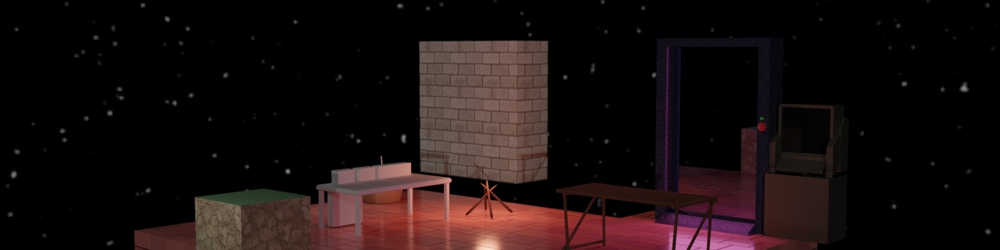
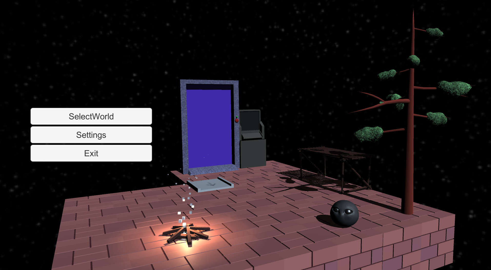
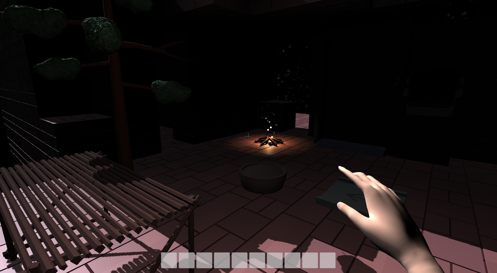
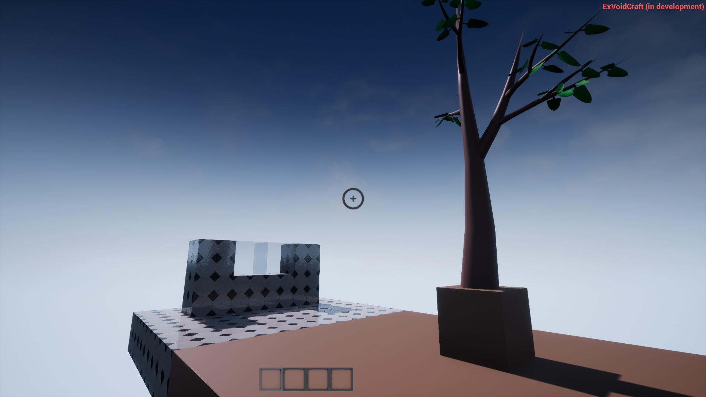

ExVoidCraft
ExVoidCraft - Альтернатива Minecraft, с элементами автоматизации, в основном нацеленная на познание мира, получение всего из ничего
Cистема конечностей, старение, вес, голод, жажда, смена тела.
Исследование других миров
Сюжет. В отличии от обычных песочниц
Большинство действий будут соответствовать реальному миру
Состояние игры
Долгострой, который я уже пытался реализовать на Unreal Engine, Unity.
Идеальным вариантом было бы написать свой игровой движок на C++, так как цель это быстродействие на слабых компьютерах,
но и так же нужна система порталов для неевклидовой геометрии, чтобы реализовать плавный переход из портала одного мира в другой.
| Концепция | 3% |
|---|
| Сюжет | 10% |
|---|
| 3D модели | 2% |
|---|
| Собственный движок | 0% |
|---|
| Редактор предметов и крафтов | 0% |
|---|
Попытка реализации на Unity


Попытка реализации на UnrealEngine
